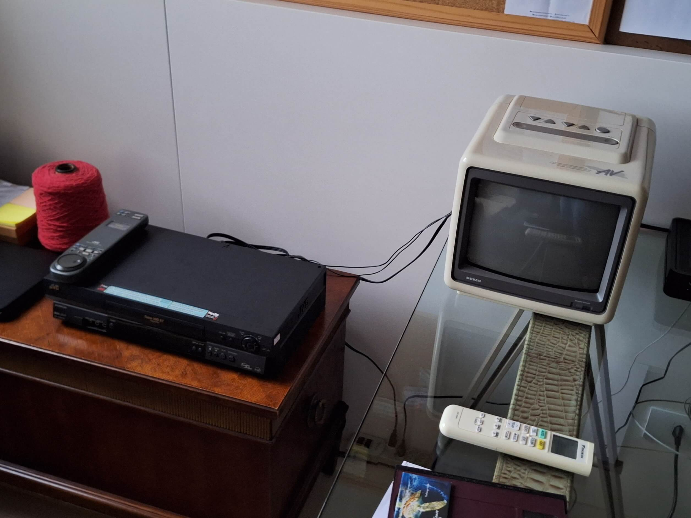

Wellcome
Wellcome
Feel free to look around! |
05/15/2024 - Back in track! Honestly, I’m not at my 100% potential right now… But since my last message lots of things have happened! Some great, some worse, but I am more engaged in doing stuff. (But my grades at school still suck! :D) 01/16/2024 - Am I tired?I don't know… Every now and then people are in a bad mood, but I am worried about myself. I feel this is like a downgrade! I am feeling more lonely and more improductive. Also, I made some little changes here! I added “birds” ! Kind of… These flying eyes have a random chance to spawn and you can click them. I will do a prettier counter later… For now that's it! Nothing really special is happening these days… I hope you are having a great time! ^^ 12/09/2023 - The VHS projectA while ago I made a TV head project, and now I want to make a video on YouTube explaining how I did it. But I was wondering, can I use a VHS? So I gathered all of my old electronics and got a VCR from my old grandma’s house: It isn't a big project, it's more like an optional part of a big project.
Now I'm waiting for the rest of the components to be delivered. 12/08/2023 - Navigator added!Yesterday I did nothing on the website because I was doing french class homework. Anyways, today I added a navigator! It will be a little empty for a while… For now I will just use the “PopUp.html” file as a placeholder. Maybe I still need to organize my code better, but I will see about that later! See you soon! (No one is really reading this right now… I think i'm insane! lol) 12/05/2023 - Howdy!Today is a good day! I'm finally free from the duties of going to school in the morning! (At least for a while…) Now I can focus on my personal projects like this website! At the moment I don't have a host provider, but I will find a way to put this website on air. Until that I will use this “blogs” as an update log! Good bye! |